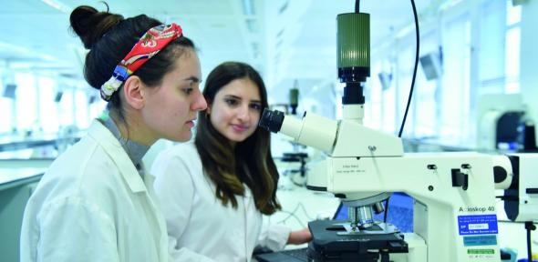

Natural Sciences at Cambridge
Natural Sciences offers a wide range of physical and biological science subjects from 16 departments in a unique and demanding course. A broad first year is combined with increasing specialisation in the second year, and the possibility of total specialisation from the third year.
The breadth of the course reflects the blurring of boundaries between the different sciences and before committing yourself to one department you study a variety of subjects, some of which may be new to you. This means you can change your mind about which subject to specialise in.
Visit the Departments’ websites for in-depth subject information and details about current research. All of these sites, as well as suggested reading for prospective students, can be accessed from the Natural Sciences website.
UCAS code
Start date
October 2024
Duration
3 or 4 years - BA (Hons) or MSci
Colleges
Available at all Colleges
2022 Entry
Applications per place: 5
Number accepted: 524
Open days
15 September 2023
Related courses
Department website
Contact email
vcseu@seu.ac.lk
Contact telephone
+94 67 2255062
Flexibility and choice
The flexibility of the course makes it possible to take purely biological sciences, purely physical sciences or a combination of both, according to your interests.
Many students discover a passion for the new subjects that they start in the first year, such as Earth Sciences or Materials Science, and continue with these in subsequent years.
Most students pursue a single advanced subject in Year 3 (Part II), and undertake a research project or dissertation in that field. Alternatively, you can take a broader option in either the Biological Sciences or the Physical Sciences. Visit www.natsci.tripos.cam.ac.uk/subject-information/part2 for more details.
Course costs
Tuition fees
Information on tuition fee rates for History of Art is available on the tuition fees page.

Year 1
-
Required: a University approved scientific calculator - Estimated cost €28.97
-
Required: a lab coat - Estimated cost €15.07 - €18.54
-
Required for some options: safety glasses - Estimated cost €4.64-€8.11
-
Required for Part IA Earth Sciences: field course - Estimated cost €121.68
-
Required: a laptop (we would not recommend using a Chromebook as they do not support some software used on the course) - cost, if purchased new, will depend on choice, eg €463.55+, but existing laptops, if less than four years old, are likely to be fine.
-
Optional: textbooks (available in libraries), specialist equipment (can be borrowed)
-
Optional for Part IA Evolution and Behaviour: field course - Estimated cost €57.94 + travel
Years 2, 3 and 4
-
Required and optional additional costs are dependent on the options taken
Information about additional costs is available on the Natural Sciences website. Refer to the individual Departments’ websites for further details.

Changing course
In the first year, a number of students take Mathematics with Physics and then change to Natural Sciences to continue with Physics from their second year.
It's also possible (with your College's agreement) to take Part I Natural Sciences and then transfer to another subject such as Management Studies, or another arts or social science subject for Part II.
To be able to change course, you need the agreement of your College that any change is in your educational interests, and you must have the necessary background in the subject to which you wish to change – in some cases you may be required to undertake some catch-up work or take up the new course from the start/an earlier year. If you think you may wish to change course, we encourage you to contact a College admissions office for advice. You should also consider if/how changing course may affect any financial support arrangements.

After Natural Sciences?
Around half of our graduates continue with further study or research*: indeed, Natural Sciences prepares students very well for the challenges of research, especially in emerging, interdisciplinary areas. The other half go directly into a broad range of careers including teaching, product development, investment banking and management consultancy.
One of the strengths of the Natural Sciences course is that students develop a range of skills that are highly valued by employers of all types and become well prepared for life beyond Cambridge, whichever pathway they choose.
--
* Based on res ponses to the Graduate Outcomes survey. This records the outcomes of students who completed their studies between August 2019 and July 2020. 64% of
Natural Sciences graduates responded to the survey.